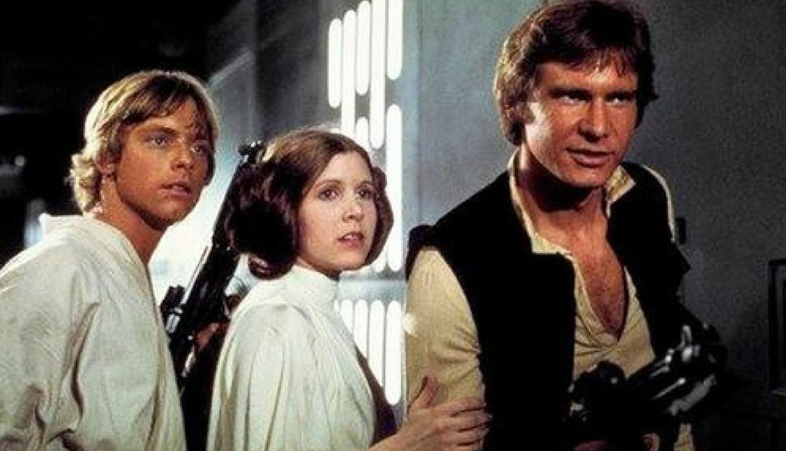
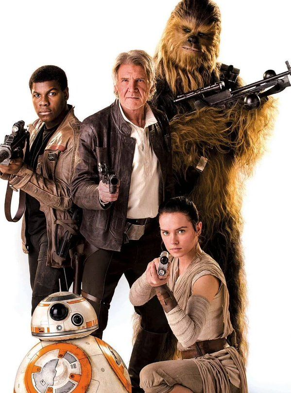

STAR WARS: INICIO
Star Wars (conocida también en países hispanohablantes como La guerra de las galaxias) es una serie de películas originalmente concebidas por el cineasta estadounidense George Lucas, y posteriormente, producidas y distribuidas por The Walt Disney Company a partir de 2012. Normalmente se la considera como un space opera (serial espacial),un subgenero de la ciencia ficción, aunque su creador la define como un soap opera (serial televisivo). Sin embargo, se trata de una serie de fantasía, ya que su finalidad no es predecir un futuro factible, si no el de entretener a través de un mundo imaginario.
Primera trilogía
La trilogía original
La primera película de la serie, Star Wars: Episode IV - A New Hope (1977), estrenada originalmente solo como Star Wars dando nombre a toda la saga, contó con los actores Mark Hamill, Harrison Ford, Carrie Fisher, Alec Guinness, Anthony Daniels, Kenny Baker, Peter Mayhew, Peter Cushing y David Prowse. Aunque tuvo numerosas dificultades durante la producción, 20th Century Fox se encargó de su distribución y su estreno tuvo lugar el 25 de mayo de 1977. Años después, se convirtió en un fenómeno de la cultura popular a nivel mundial y su influencia ha sido reconocida por numerosos cineastas. El éxito de la película hizo que Lucas se involucrara en la financiación de las dos secuelas que completaron la llamada «trilogía original», Star Wars: Episode V - The Empire Strikes Back (1980) y Star Wars: Episode VI - Return of the Jedi (1983).

Segunda trilogía: la precuela
Dieciséis años después de la última película llegó a los cines Star Wars: Episode I - The Phantom Menace (1999), la primera cinta de una nueva trilogía centrada en los años previos a la anterior, una precuela de la saga. Star Wars: Episode II - Attack of the Clones (2002) y Star Wars: Episode III - Revenge of the Sith (2005), estrenadas nuevamente en intervalos de tres años, completaron una saga de producciones que recaudó aproximadamente 5510 millones de dólares estadounidenses entre las seis películas.

Tercera trilogía: la secuela
En octubre de 2012 Disney adquirió Lucasfilm, responsable de la producción de las seis películas anteriores,y anunció la realización de una nueva trilogía cinematográfica integrada por Star Wars: Episode VII - The Force Awakens (2015), Star Wars: Episodio VIII - Los últimos Jedi (2017) y Star Wars: Episodio IX (2019). También se anunciaron otras películas derivadas del universo de Star Wars; la primera de ellas lleva por título Rogue One: una historia de Star Wars (2016) y la segunda Han Solo: una historia de Star Wars.
Película: Star Wars: Episodio IX (2019)
Esta película no ha sido estrenada en cines, se espera su lanzamiento para diciembre del 2019. Se tiene una alta espectativa de esta por parte de los fans, ya que sería como la final "definitiva" de toda la saga de increibles películas.
